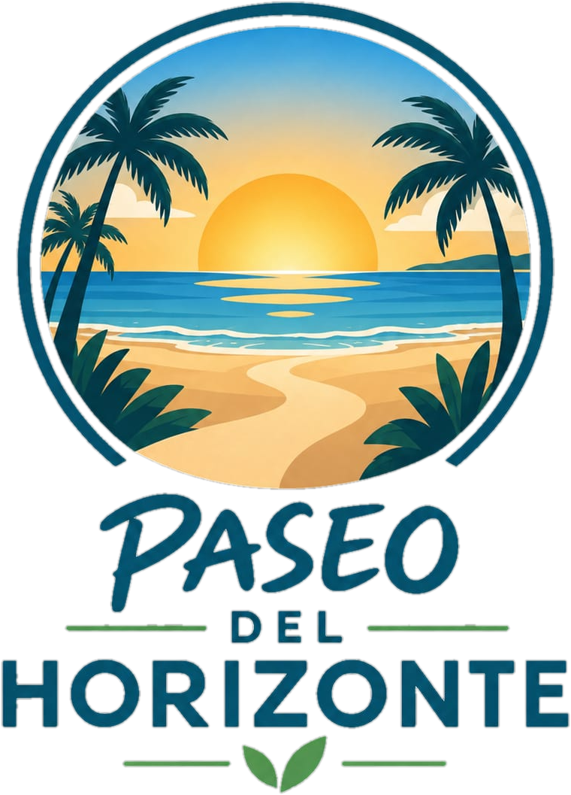

Playa Vista Eterna
Una de las principales playas de Paseo del Horizonte, ideal para disfrutar del mar, descansar y contemplar el paisaje costero.



Paseo del Horizonte es una ciudad turística costera reconocida por sus playas, paisajes y actividad turística. Durante el verano recibe visitantes que buscan disfrutar del mar, la gastronomía y las distintas propuestas culturales y recreativas. Te invitamos a descubrir todo lo que Paseo del Horizonte tiene para ofrecerte a vos y a tu familia o amigos.
Una de las principales playas de Paseo del Horizonte, ideal para disfrutar del mar, descansar y contemplar el paisaje costero.
La ciudad ofrece distintas actividades para disfrutar del mar, como kayak, paseos en lancha y otras propuestas para los visitantes.
El corazón de la ciudad y uno de sus principales puntos de encuentro. Está rodeada de bares, restaurantes y espacios donde disfrutar de la vida nocturna.
Paseo del Horizonte ofrece diferentes actividades y eventos durante todo el año. En temporada de verano se destacan las propuestas al aire libre, los eventos culturales y las actividades recreativas para visitantes y residentes.